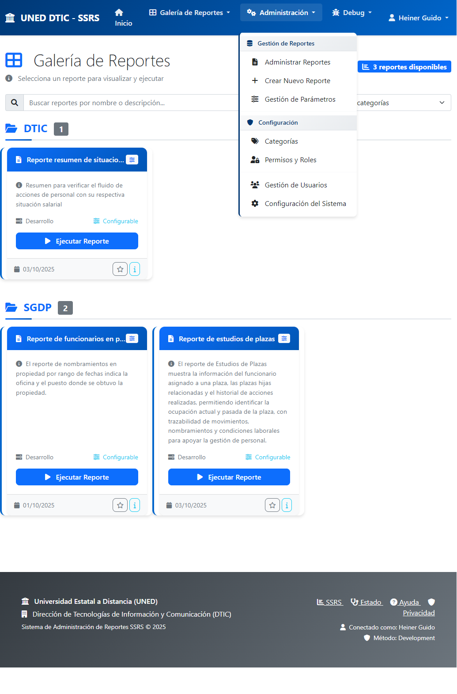

Introducción
El Sistema de Reportes SSRS de UNED DTIC es una plataforma web moderna que centraliza y securiza el acceso a todos los reportes empresariales de la universidad. Este manual presenta capturas de pantalla reales del sistema en funcionamiento, demostrando sus capacidades y beneficios.
Objetivo del Sistema
- Modernizar el acceso a reportes SQL Server Reporting Services (SSRS)
- Proporcionar una interfaz web intuitiva y segura
- Centralizar la administración de reportes
- Automatizar la generación de formularios de parámetros
1. Autenticación con Active Directory

Figura 1: Página de Autenticación con Active Directory
Características Destacadas
- Integración LDAP/Active Directory: Utiliza las credenciales existentes de UNED
- Interfaz Corporativa: Diseño alineado con la identidad visual institucional
- Modo Desarrollo: Claramente identificado en la esquina superior
- Seguridad Robusta: Validación de grupos y permisos
- Sesión Persistente: Opción para mantener la sesión activa
Proceso de Autenticación
- El usuario ingresa sus credenciales de red UNED
- El sistema valida contra el servidor LDAP institucional
- Verifica la pertenencia al grupo autorizado (group_DTIC)
- Establece una sesión segura con timeout configurable
- Redirige al dashboard principal de reportes
2. Galería de Reportes

Figura 2: Dashboard Principal - Galería de Reportes
Funcionalidades Principales
- Catálogo Visual: Presentación clara de todos los reportes disponibles
- Organización por Categorías: Agrupación lógica (DTIC, SGDP, etc.)
- Información Detallada: Descripción, entorno, parámetros, fechas
- Búsqueda Inteligente: Filtrado por nombre o descripción
- Navegación Intuitiva: Breadcrumbs y menús organizados
3. Formulario Dinámico de Parámetros

Figura 3: Generación Automática de Formularios
Generación Automática
- Detección Inteligente: Lee automáticamente los parámetros del reporte SSRS
- Formularios Dinámicos: Genera campos apropiados según el tipo de dato
- Validación Automática: Identifica campos requeridos y opcionales
- Múltiples Formatos: HTML, PDF, Excel, Word, CSV, XML
4. Menú de Administración

Figura 4: Opciones Administrativas Desplegadas
Opciones de Gestión
- Gestión de Reportes: Administrar, crear y configurar reportes
- Gestión de Parámetros: Configuración avanzada de formularios
- Configuración del Sistema: Categorías, permisos, usuarios
- Control de Acceso: Solo usuarios autorizados
5. Panel de Administración de Reportes

Figura 5: Vista Completa de Gestión de Reportes
Funcionalidades Avanzadas
- Vista Tabular Completa: Información detallada de todos los reportes
- Filtros Múltiples: Por nombre, categoría, estado
- Paginación Inteligente: Control de elementos mostrados
- Acciones Rápidas: Visualizar, editar, gestionar, eliminar
- Estadísticas en Tiempo Real: Contadores y métricas del sistema
6. Gestión Avanzada de Parámetros

Figura 6: Administración Granular de Parámetros
Características Especiales
- Clonación de Parámetros: Copia configuraciones entre reportes similares
- Mapeo Automático: Detección desde SSRS
- Configuración Granular: Control fino de cada aspecto
- Validación de Tipos: Verificación de compatibilidad
Beneficios del Sistema
| Aspecto |
Antes del Sistema |
Después del Sistema |
| Acceso |
Directo a SSRS (complejo) |
Interfaz web moderna |
| Parámetros |
Configuración manual |
Formularios automáticos |
| Seguridad |
Sin control centralizado |
Control total con AD |
| Soporte |
Dependencia alta |
Usuarios autónomos |
Métricas de Mejora Estimadas
- 80% reducción en tickets de soporte técnico
- 90% reducción en tiempo de capacitación
- 100% mejora en trazabilidad para auditorías
- 300% aumento en eficiencia de generación de reportes
Conclusiones
El Sistema de Reportes SSRS de UNED DTIC representa una modernización completa del acceso a reportes empresariales.
Logros Alcanzados:
- Seguridad Robusta: Integración total con Active Directory
- Experiencia Mejorada: Interfaz moderna y auto-explicativa
- Administración Centralizada: Control total desde una sola plataforma
- Automatización Inteligente: Reducción del trabajo manual
- Escalabilidad: Base sólida para crecimiento futuro
Recomendación:
El sistema está completamente funcional y listo para implementación en producción. Representa una inversión estratégica que mejorará significativamente la eficiencia operacional y la seguridad institucional de UNED.